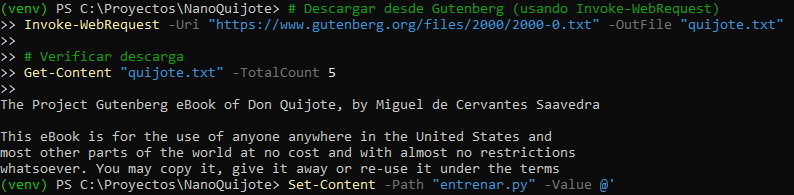
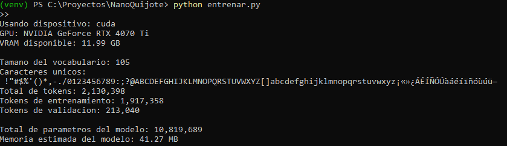
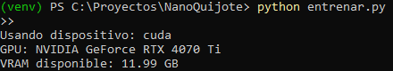
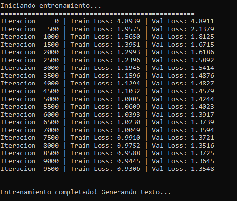
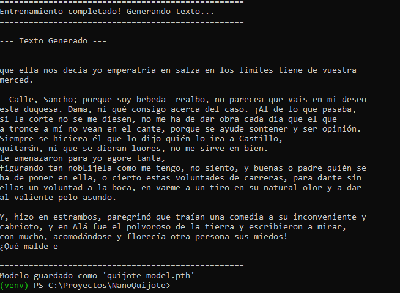
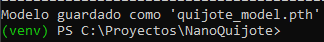

Documento de la práctica donde se implementa un modelo Transformer desde cero usando PyTorch, se entrena con el texto completo de Don Quijote de la Mancha y se genera texto en estilo cervantino. El objetivo es comprender el proceso completo de pre-entrenamiento a microescala, utilizando un único libro como “universo” lingüístico.[web:30]
El objetivo ha sido entrenar un modelo de lenguaje desde cero (sin usar un modelo base pre-entrenado) utilizando únicamente el texto de "Don Quijote de la Mancha" de Miguel de Cervantes.[web:30] El modelo no sabe nada del mundo exterior ni del lenguaje moderno; su único universo es el castellano del siglo XVII.
Esta práctica permite entender los fundamentos del pre-entrenamiento: tokenización, arquitectura Transformer, mecanismo de atención y bucle de entrenamiento, aplicando los mismos principios que se usan en modelos gigantescos como GPT-4, pero a escala reducida.
Toda la práctica se ha realizado en una carpeta dedicada llamada NanoQuijote,
con un entorno virtual de Python para aislar las dependencias del resto del sistema.
mkdir C:\Proyectos\NanoQuijote
cd C:\Proyectos\NanoQuijote
python -m venv venv
.\venv\Scripts\activate
pip install torch --index-url https://download.pytorch.org/whl/cu121Usando dispositivo: cuda y el nombre de la RTX 4070 Ti
confirmó que el entorno estaba bien configurado.
El texto completo de Don Quijote se ha obtenido desde el Proyecto Gutenberg, que ofrece la obra en formato texto plano y dominio público en varios idiomas y ediciones.[web:30][web:31]
Invoke-WebRequest -Uri "https://www.gutenberg.org/files/2000/2000-0.txt" -OutFile "quijote.txt"
# Comprobar las primeras líneas
Get-Content "quijote.txt" -TotalCount 5
En lugar de usar un tokenizador BPE avanzado, en esta práctica el modelo aprende directamente a nivel de caracteres (char-level). Este enfoque es más simple y encaja bien con un modelo pequeño, similar a otros ejemplos educativos de transformers mínimos como NanoGPT.[web:42][web:38]
with open('quijote.txt', 'r', encoding='utf-8') as f:
text = f.read()
chars = sorted(list(set(text)))
vocab_size = len(chars) # Resultado: 105 caracteres únicos
# Mapeos char <-> índice
stoi = { ch:i for i,ch in enumerate(chars) }
itos = { i:ch for i,ch in enumerate(chars) }
encode = lambda s: [stoi[c] for c in s]
decode = lambda l: ''.join([itos[i] for i in l])El vocabulario incluye letras mayúsculas y minúsculas, dígitos, signos de puntuación, caracteres con tilde, eñes y símbolos tipográficos usados en la edición de Gutenberg.[web:30]

Todo el texto se convierte a una secuencia de IDs de caracteres y se divide en conjunto de entrenamiento (90%) y de validación (10%).
data = torch.tensor(encode(text), dtype=torch.long)
n = int(0.9 * len(data))
train_data = data[:n]
val_data = data[n:]
print(f"Total de tokens: {len(data):,}")
print(f"Tokens de entrenamiento: {len(train_data):,}")
print(f"Tokens de validación: {len(val_data):,}")Los hiperparámetros se han ajustado para aprovechar la RTX 4070 Ti sin quedarse cortos ni exceder la memoria disponible.
batch_size = 64 # Secuencias en paralelo
block_size = 256 # Longitud máxima de contexto
n_embd = 384 # Dimensión de embeddings
n_head = 6 # Cabezas de atención
n_layer = 6 # Bloques Transformer
max_iters = 10000 # Iteraciones de entrenamiento
eval_interval = 500
learning_rate = 3e-4
dropout = 0.2
Con esta configuración, el modelo tiene 10,819,689 parámetros,
lo que supone unos 41 MB de memoria en float32, claramente manejable
para una GPU de consumo.[web:42][web:38]

La arquitectura implementa los bloques típicos de un Transformer decodificador: atención multi-cabeza, conexiones residuales, normalización de capas y red feed-forward.[web:42][web:36]
class Head(nn.Module):
def __init__(self, head_size):
super().__init__()
self.key = nn.Linear(n_embd, head_size, bias=False)
self.query = nn.Linear(n_embd, head_size, bias=False)
self.value = nn.Linear(n_embd, head_size, bias=False)
self.register_buffer('tril', torch.tril(torch.ones(block_size, block_size)))
self.dropout = nn.Dropout(dropout)
def forward(self, x):
B,T,C = x.shape
k = self.key(x)
q = self.query(x)
wei = q @ k.transpose(-2,-1) * C**-0.5
wei = wei.masked_fill(self.tril[:T, :T] == 0, float('-inf'))
wei = F.softmax(wei, dim=-1)
wei = self.dropout(wei)
v = self.value(x)
out = wei @ v
return out
Encima de estas cabezas de atención se construyen MultiHeadAttention,
FeedForward y un bloque Block que combina ambos
con normalización y atajos residuales, igual que en otros ejemplos de Transformers educativos.[web:42]
El entrenamiento sigue el esquema clásico: se obtienen lotes aleatorios de secuencias, se calcula la pérdida de entropía cruzada y se actualizan los pesos con AdamW.
def get_batch(split):
data = train_data if split == 'train' else val_data
ix = torch.randint(len(data) - block_size, (batch_size,))
x = torch.stack([data[i:i+block_size] for i in ix])
y = torch.stack([data[i+1:i+block_size+1] for i in ix])
x, y = x.to(device), y.to(device)
return x, y
@torch.no_grad()
def estimate_loss():
out = {}
model.eval()
for split in ['train', 'val']:
losses = torch.zeros(200)
for k in range(200):
X, Y = get_batch(split)
logits, loss = model(X, Y)
losses[k] = loss.item()
out[split] = losses.mean()
model.train()
return outfor iter in range(max_iters):
if iter % eval_interval == 0:
losses = estimate_loss()
print(f"Iteración {iter:5d} | Train Loss: {losses['train']:.4f} | Val Loss: {losses['val']:.4f}")
xb, yb = get_batch('train')
logits, loss = model(xb, yb)
optimizer.zero_grad(set_to_none=True)
loss.backward()
optimizer.step()Durante el entrenamiento, la pérdida disminuyó de forma constante, lo que indica que el modelo fue aprendiendo patrones del texto:
La diferencia moderada entre entrenamiento y validación sugiere que el modelo generaliza razonablemente bien a partes del texto que no ha visto en los lotes de entrenamiento.

Una vez finalizado el entrenamiento, se usó el método generate del modelo
para producir texto nuevo carácter a carácter, empezando desde un token vacío (ID 0).
context = torch.zeros((1, 1), dtype=torch.long, device=device)
generated_tokens = model.generate(context, max_new_tokens=1000)[0].tolist()
generated_text = decode(generated_tokens)
print(generated_text)El texto resultante no es perfectamente coherente, pero sí muestra:

Al final del script, el modelo se guarda en un archivo quijote_model.pth
junto con el vocabulario y los hiperparámetros principales, de forma que se pueda
reutilizar más adelante sin repetir el entrenamiento.
torch.save({
'model_state_dict': model.state_dict(),
'vocab_size': vocab_size,
'stoi': stoi,
'itos': itos,
'hyperparameters': {
'n_embd': n_embd,
'n_head': n_head,
'n_layer': n_layer,
'block_size': block_size
}
}, 'quijote_model.pth')
Al principio, el archivo entrenar.py daba un error del tipo
SyntaxError: Non-UTF-8 code starting with '\xe1', provocado por acentos
y caracteres especiales en comentarios y cadenas de texto.
Para solucionarlo, se recreó el archivo desde PowerShell sin acentos en los comentarios y asegurando que se guardaba explícitamente en UTF‑8, evitando así conflictos con la codificación por defecto.
Otra duda inicial fue si era “malo” que la GPU estuviera al 99‑100% de uso durante
varios minutos. Con nvidia-smi se verificó que la temperatura rondaba los 76°C,
un valor totalmente normal para una carga de entrenamiento en una GPU moderna.
nvidia-smiUna vez resuelto el tema de la codificación, el entrenamiento fue estable: no hubo errores de memoria, ni problemas con CUDA, ni necesidades de ajustar el tamaño de lote a la baja. La configuración inicial de hiperparámetros funcionó bien a la primera gracias a la VRAM disponible.
En resumen, aparte del detalle de la codificación del archivo Python, todo el proceso se desarrolló sin errores graves y el modelo llegó a converger con un loss razonablemente bajo.
Esta práctica demuestra que, incluso en un PC doméstico con una sola GPU, es posible llevar a cabo un pre-entrenamiento real (aunque a microescala) de un modelo de lenguaje basado en Transformers, siempre que se ajuste el tamaño del modelo y del dataset.
Aunque el resultado no alcanza la coherencia de modelos masivos, sí reproduce de forma convincente el “gesto” del texto de Cervantes. A partir de aquí, posibles extensiones serían probar con más libros, aumentar ligeramente el tamaño del modelo o convertirlo a otros formatos para su uso en interfaces como LM Studio.